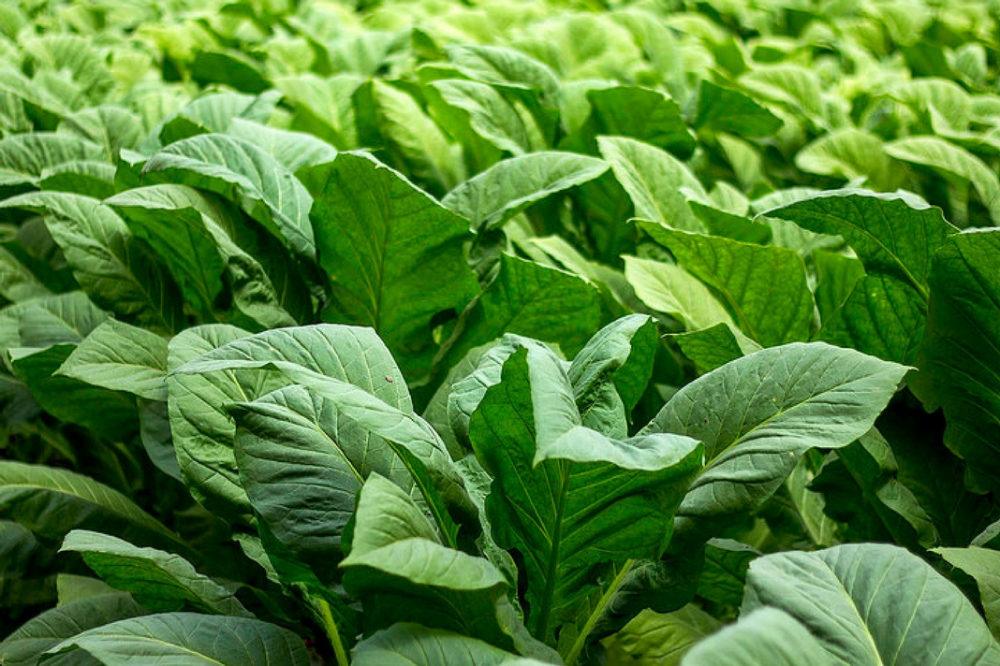

ARTIKEL

Tembakau Termahal dari Indonesia
DuniaTembakau.com - INDONESIA merupakan salah satu negara di Asia dengan jumlah perokok terbanyak, peringkat kedua setelah China,
Baca Selengkapnya
6 Tips Agar Tembakau Terbeli Pabrikan
DuniaTembakau.com - Tembakau merupakan tanaman musiman yang bersifat selalu mengalah dengan tanaman lain. Hidupnya hanya memerlukan segenggam tanah, untuk melebarkan akar-akarnya.
Baca Selengkapnya
PBNU: Kenaikan Cukai Tembakau Berdampak Petani
DuniaTembakau.com - JAKARTA. Pengurus Besar Nahdlatul Ulama (PBNU) meminta pemerintah, dalam hal ini Kementerian Keuangan agar mempertimbangkan rencana menaikka cukai tembakau pada 2020.
Baca Selengkapnya

Ragam Jenis Tembakau di Indonesia
Meskipun terdapat lebih dari 50 spesies tembakau yang tergolong genus nicotiana, namun hanya dua spesies yang mempunyai arti ekonomi cukup tinggi.
Baca Selengkapnya